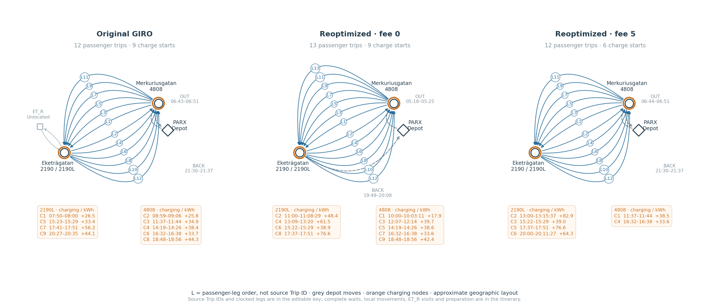
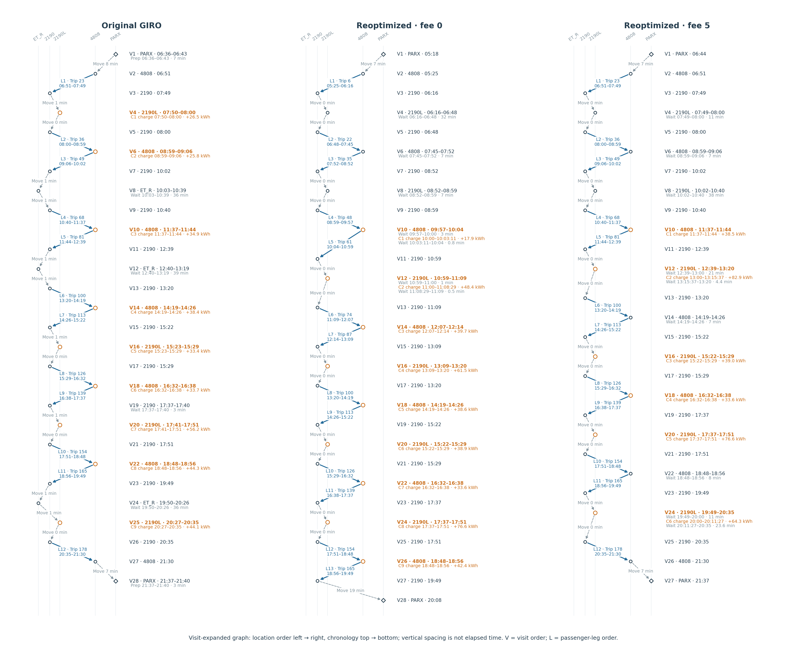
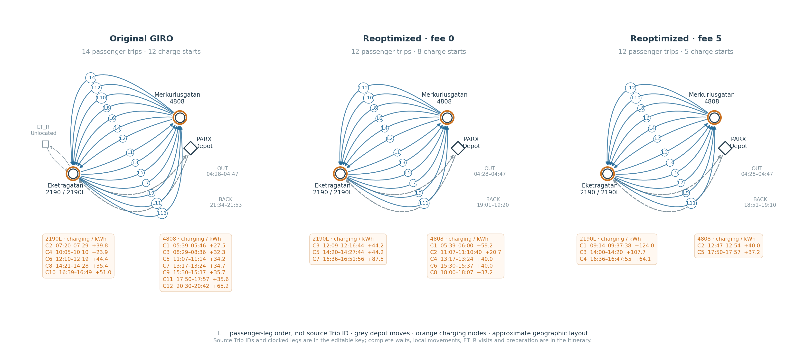
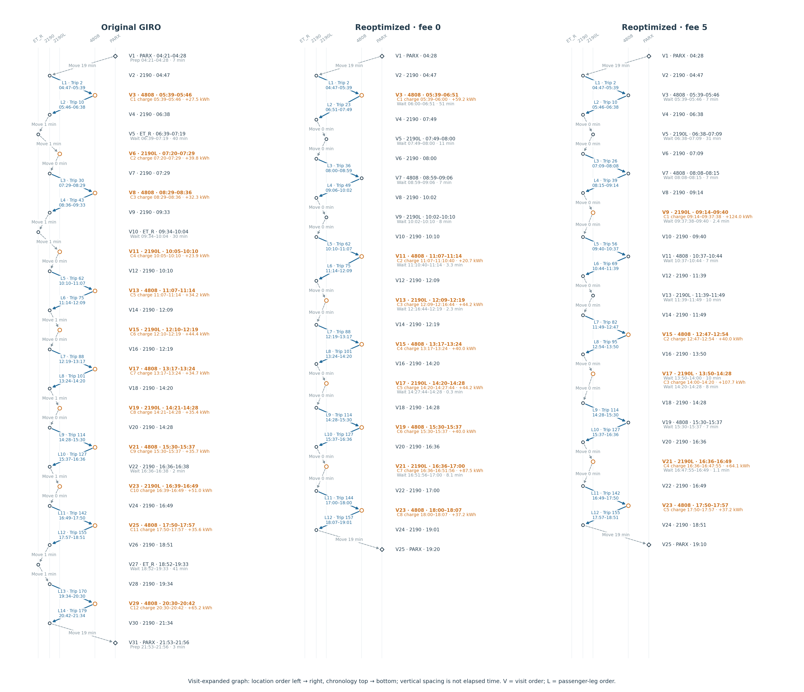
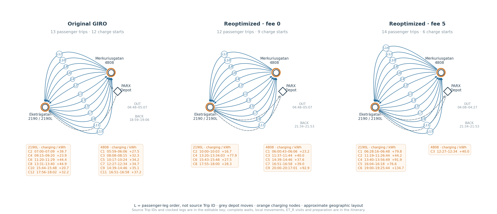
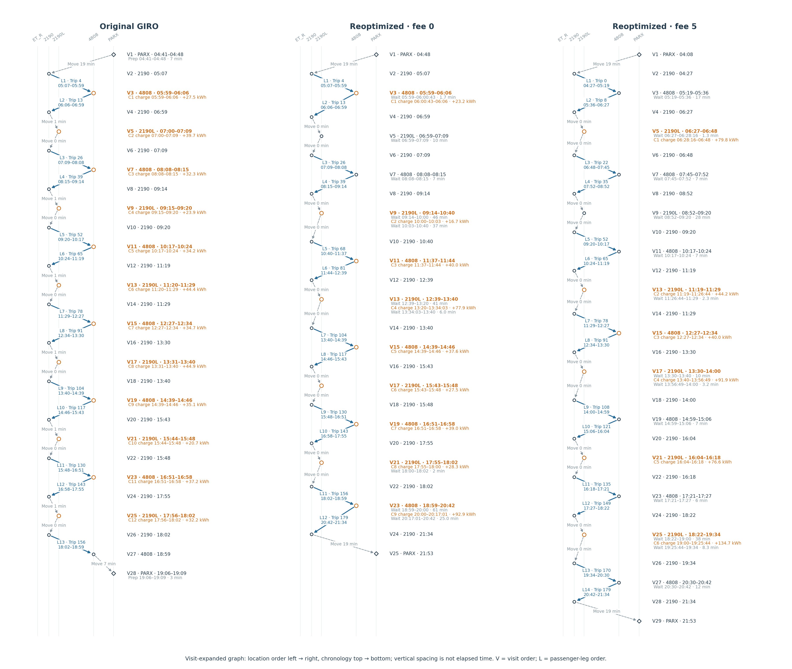
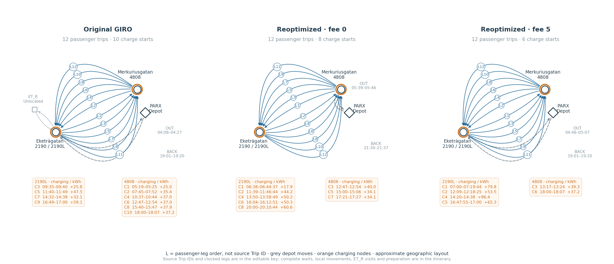
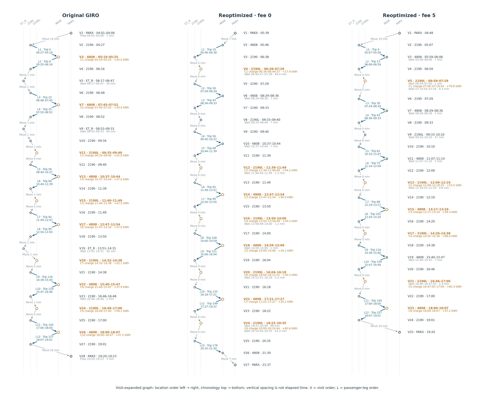
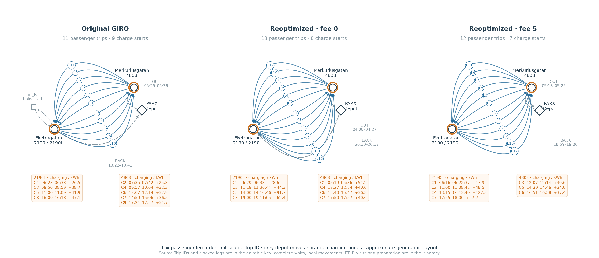
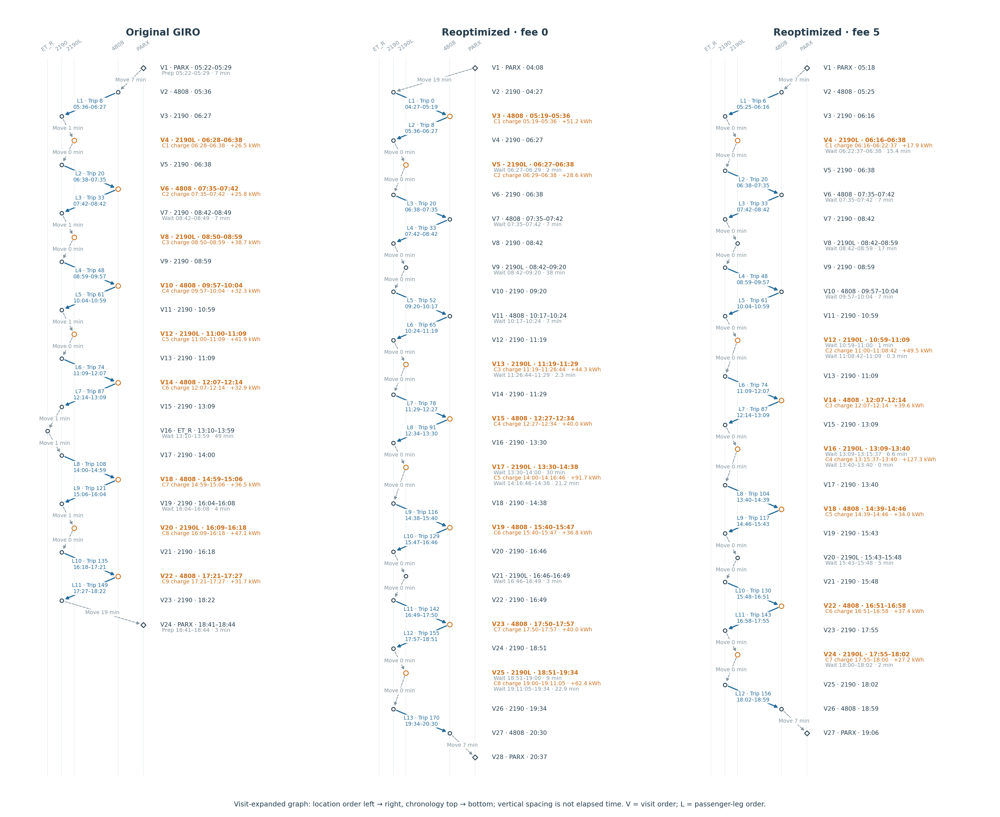

Five bus-day comparisons
Each spatial graph keeps locations fixed and shows directed passenger legs, depot departure/return and every charging window. Open the itinerary for the complete chronological path, including waiting, preparation, local transfers and ET_R rest visits.
Comparison scope: these are the existing matched-physics recharging results on saved trip sequences, not new column-generation runs. Paired bus labels follow an optimal but nonunique overlap mapping, not a physical vehicle identity. Every fee-0/fee-5 pair has different passenger assignments, so differences are not fee-only causal effects. Only original duty13414 and its fee-5 counterpart share the same twelve passenger trips.
Read the labels: L1, L2, … mean passenger-leg order. Trip numbers use stable labels from our prepared input, not GIRO-supplied journey numbers. C1, C2, … mean charging-session order; V1, V2, … in the itinerary mean visit order. Time labels are rounded to the nearest second; CSV/JSON retains full precision.
The spatial overview groups the Eketrägatan stop2190 and charger2190L. The itinerary separates them and retains the original1-minute transfer versus the model0-minute transfer. ET_R is an unlocated auxiliary node; its drawn position is schematic. Reoptimized empty-driving clocks follow a feasible reconstruction convention, not uniquely optimized departure choices.
Download all five comparisons and itineraries (PDF) · Comparison table CSV · Editable leg-key CSV · All751 events CSV · Sources and scope · Why the six k40 chains can differ
| Duty | Trips O/0/5 | Starts O/0/5 | Shared original trips 0/5 | What to compare |
|---|
| 13414 | 12 / 13 / 12 | 9 / 9 / 6 | 6 / 12 | Only original-versus-fee5 pair with identical twelve service trips; nine to six charges, with original ET_R visits and a different thirteen-trip fee0 assignment. |
| 13403 | 14 / 12 / 12 | 12 / 8 / 5 | 7 / 6 | Largest original-versus-fee5 charge-count change, twelve to five; both modeled arms also finish substantially earlier because trip assignments differ. |
| 13405 | 13 / 12 / 14 | 12 / 9 / 6 | 9 / 4 | Twelve to nine to six charges, with substantially later final modeled service and depot return; highlights route reassignment and longer charging intervals. |
| 13401 | 12 / 12 / 12 | 10 / 8 / 6 | 4 / 4 | Ten to eight to six charges; fee0 returns much later while fee5 keeps the original return time despite a different trip assignment. |
| 13408 | 11 / 13 / 12 | 9 / 8 / 7 | 3 / 6 | Nine to eight to seven charges and low original-fee0 overlap; useful illustration of why bus labels should not imply identical service assignments. |
Original duty 13414 and paired schedules
Trips: 12 / 13 / 12 · Charge starts: 9 / 9 / 6 (original / fee 0 / fee 5)
Only original-versus-fee5 pair with identical twelve service trips; nine to six charges, with original ET_R visits and a different thirteen-trip fee0 assignment.

Spatial PDF · Vector SVG · Complete itinerary image · Complete itinerary PDF
Open editable leg and charging keys
These native HTML tables can be selected, edited and copied. Edits are local to this browser view; original CSV/JSON files remain unchanged.
Original GIRO
Passenger legs
| Leg | Trip | Depart | Arrive | min | kWh |
|---|
| L1 | 23 | 06:51 | 07:49 | 58 | 42.50 |
| L2 | 36 | 08:00 | 08:59 | 59 | 41.73 |
| L3 | 49 | 09:06 | 10:02 | 56 | 42.50 |
| L4 | 68 | 10:40 | 11:37 | 57 | 41.73 |
| L5 | 81 | 11:44 | 12:39 | 55 | 42.50 |
| L6 | 100 | 13:20 | 14:19 | 59 | 41.73 |
| L7 | 113 | 14:26 | 15:22 | 56 | 42.50 |
| L8 | 126 | 15:29 | 16:32 | 63 | 41.73 |
| L9 | 139 | 16:38 | 17:37 | 59 | 42.50 |
| L10 | 154 | 17:51 | 18:48 | 57 | 41.73 |
| L11 | 165 | 18:56 | 19:49 | 53 | 42.50 |
| L12 | 178 | 20:35 | 21:30 | 55 | 41.73 |
Charging windows
| Charge | Site | Start | End | kWh |
|---|
| C1 | 2190L | 07:50 | 08:00 | 26.52 |
| C2 | 4808 | 08:59 | 09:06 | 25.78 |
| C3 | 4808 | 11:37 | 11:44 | 34.95 |
| C4 | 4808 | 14:19 | 14:26 | 38.39 |
| C5 | 2190L | 15:23 | 15:29 | 33.37 |
| C6 | 4808 | 16:32 | 16:38 | 33.73 |
| C7 | 2190L | 17:41 | 17:51 | 56.21 |
| C8 | 4808 | 18:48 | 18:56 | 44.25 |
| C9 | 2190L | 20:27 | 20:35 | 44.14 |
Reoptimized · fee 0
Passenger legs
| Leg | Trip | Depart | Arrive | min | kWh |
|---|
| L1 | 6 | 05:25 | 06:16 | 51 | 42.50 |
| L2 | 22 | 06:48 | 07:45 | 57 | 41.73 |
| L3 | 35 | 07:52 | 08:52 | 60 | 42.50 |
| L4 | 48 | 08:59 | 09:57 | 58 | 41.73 |
| L5 | 61 | 10:04 | 10:59 | 55 | 42.50 |
| L6 | 74 | 11:09 | 12:07 | 58 | 41.73 |
| L7 | 87 | 12:14 | 13:09 | 55 | 42.50 |
| L8 | 100 | 13:20 | 14:19 | 59 | 41.73 |
| L9 | 113 | 14:26 | 15:22 | 56 | 42.50 |
| L10 | 126 | 15:29 | 16:32 | 63 | 41.73 |
| L11 | 139 | 16:38 | 17:37 | 59 | 42.50 |
| L12 | 154 | 17:51 | 18:48 | 57 | 41.73 |
| L13 | 165 | 18:56 | 19:49 | 53 | 42.50 |
Charging windows
| Charge | Site | Start | End | kWh |
|---|
| C1 | 4808 | 10:00 | 10:03:11 | 17.87 |
| C2 | 2190L | 11:00 | 11:08:29 | 48.36 |
| C3 | 4808 | 12:07 | 12:14 | 39.69 |
| C4 | 2190L | 13:09 | 13:20 | 61.50 |
| C5 | 4808 | 14:19 | 14:26 | 38.63 |
| C6 | 2190L | 15:22 | 15:29 | 38.93 |
| C7 | 4808 | 16:32 | 16:38 | 33.59 |
| C8 | 2190L | 17:37 | 17:51 | 76.57 |
| C9 | 4808 | 18:48 | 18:56 | 42.40 |
Reoptimized · fee 5
Passenger legs
| Leg | Trip | Depart | Arrive | min | kWh |
|---|
| L1 | 23 | 06:51 | 07:49 | 58 | 42.50 |
| L2 | 36 | 08:00 | 08:59 | 59 | 41.73 |
| L3 | 49 | 09:06 | 10:02 | 56 | 42.50 |
| L4 | 68 | 10:40 | 11:37 | 57 | 41.73 |
| L5 | 81 | 11:44 | 12:39 | 55 | 42.50 |
| L6 | 100 | 13:20 | 14:19 | 59 | 41.73 |
| L7 | 113 | 14:26 | 15:22 | 56 | 42.50 |
| L8 | 126 | 15:29 | 16:32 | 63 | 41.73 |
| L9 | 139 | 16:38 | 17:37 | 59 | 42.50 |
| L10 | 154 | 17:51 | 18:48 | 57 | 41.73 |
| L11 | 165 | 18:56 | 19:49 | 53 | 42.50 |
| L12 | 178 | 20:35 | 21:30 | 55 | 41.73 |
Charging windows
| Charge | Site | Start | End | kWh |
|---|
| C1 | 4808 | 11:37 | 11:44 | 38.54 |
| C2 | 2190L | 13:00 | 13:15:37 | 82.93 |
| C3 | 2190L | 15:22 | 15:29 | 38.95 |
| C4 | 4808 | 16:32 | 16:38 | 33.60 |
| C5 | 2190L | 17:37 | 17:51 | 76.64 |
| C6 | 2190L | 20:00 | 20:11:27 | 64.31 |
Open complete visit-expanded graph

Original duty 13403 and paired schedules
Trips: 14 / 12 / 12 · Charge starts: 12 / 8 / 5 (original / fee 0 / fee 5)
Largest original-versus-fee5 charge-count change, twelve to five; both modeled arms also finish substantially earlier because trip assignments differ.

Spatial PDF · Vector SVG · Complete itinerary image · Complete itinerary PDF
Open editable leg and charging keys
These native HTML tables can be selected, edited and copied. Edits are local to this browser view; original CSV/JSON files remain unchanged.
Original GIRO
Passenger legs
| Leg | Trip | Depart | Arrive | min | kWh |
|---|
| L1 | 2 | 04:47 | 05:39 | 52 | 41.73 |
| L2 | 10 | 05:46 | 06:38 | 52 | 42.50 |
| L3 | 30 | 07:29 | 08:29 | 60 | 41.73 |
| L4 | 43 | 08:36 | 09:33 | 57 | 42.50 |
| L5 | 62 | 10:10 | 11:07 | 57 | 41.73 |
| L6 | 75 | 11:14 | 12:09 | 55 | 42.50 |
| L7 | 88 | 12:19 | 13:17 | 58 | 41.73 |
| L8 | 101 | 13:24 | 14:20 | 56 | 42.50 |
| L9 | 114 | 14:28 | 15:30 | 62 | 41.73 |
| L10 | 127 | 15:37 | 16:36 | 59 | 42.50 |
| L11 | 142 | 16:49 | 17:50 | 61 | 41.73 |
| L12 | 155 | 17:57 | 18:51 | 54 | 42.50 |
| L13 | 170 | 19:34 | 20:30 | 56 | 41.73 |
| L14 | 179 | 20:42 | 21:34 | 52 | 42.50 |
Charging windows
| Charge | Site | Start | End | kWh |
|---|
| C1 | 4808 | 05:39 | 05:46 | 27.47 |
| C2 | 2190L | 07:20 | 07:29 | 39.76 |
| C3 | 4808 | 08:29 | 08:36 | 32.33 |
| C4 | 2190L | 10:05 | 10:10 | 23.87 |
| C5 | 4808 | 11:07 | 11:14 | 34.21 |
| C6 | 2190L | 12:10 | 12:19 | 44.39 |
| C7 | 4808 | 13:17 | 13:24 | 34.66 |
| C8 | 2190L | 14:21 | 14:28 | 35.42 |
| C9 | 4808 | 15:30 | 15:37 | 35.72 |
| C10 | 2190L | 16:39 | 16:49 | 50.96 |
| C11 | 4808 | 17:50 | 17:57 | 35.62 |
| C12 | 4808 | 20:30 | 20:42 | 65.24 |
Reoptimized · fee 0
Passenger legs
| Leg | Trip | Depart | Arrive | min | kWh |
|---|
| L1 | 2 | 04:47 | 05:39 | 52 | 41.73 |
| L2 | 23 | 06:51 | 07:49 | 58 | 42.50 |
| L3 | 36 | 08:00 | 08:59 | 59 | 41.73 |
| L4 | 49 | 09:06 | 10:02 | 56 | 42.50 |
| L5 | 62 | 10:10 | 11:07 | 57 | 41.73 |
| L6 | 75 | 11:14 | 12:09 | 55 | 42.50 |
| L7 | 88 | 12:19 | 13:17 | 58 | 41.73 |
| L8 | 101 | 13:24 | 14:20 | 56 | 42.50 |
| L9 | 114 | 14:28 | 15:30 | 62 | 41.73 |
| L10 | 127 | 15:37 | 16:36 | 59 | 42.50 |
| L11 | 144 | 17:00 | 18:00 | 60 | 41.73 |
| L12 | 157 | 18:07 | 19:01 | 54 | 42.50 |
Charging windows
| Charge | Site | Start | End | kWh |
|---|
| C1 | 4808 | 05:39 | 06:00 | 59.20 |
| C2 | 4808 | 11:07 | 11:10:40 | 20.65 |
| C3 | 2190L | 12:09 | 12:16:44 | 44.21 |
| C4 | 4808 | 13:17 | 13:24 | 40.03 |
| C5 | 2190L | 14:20 | 14:27:44 | 44.20 |
| C6 | 4808 | 15:30 | 15:37 | 40.03 |
| C7 | 2190L | 16:36 | 16:51:56 | 87.52 |
| C8 | 4808 | 18:00 | 18:07 | 37.16 |
Reoptimized · fee 5
Passenger legs
| Leg | Trip | Depart | Arrive | min | kWh |
|---|
| L1 | 2 | 04:47 | 05:39 | 52 | 41.73 |
| L2 | 10 | 05:46 | 06:38 | 52 | 42.50 |
| L3 | 26 | 07:09 | 08:08 | 59 | 41.73 |
| L4 | 39 | 08:15 | 09:14 | 59 | 42.50 |
| L5 | 56 | 09:40 | 10:37 | 57 | 41.73 |
| L6 | 69 | 10:44 | 11:39 | 55 | 42.50 |
| L7 | 82 | 11:49 | 12:47 | 58 | 41.73 |
| L8 | 95 | 12:54 | 13:50 | 56 | 42.50 |
| L9 | 114 | 14:28 | 15:30 | 62 | 41.73 |
| L10 | 127 | 15:37 | 16:36 | 59 | 42.50 |
| L11 | 142 | 16:49 | 17:50 | 61 | 41.73 |
| L12 | 155 | 17:57 | 18:51 | 54 | 42.50 |
Charging windows
| Charge | Site | Start | End | kWh |
|---|
| C1 | 2190L | 09:14 | 09:37:38 | 124.04 |
| C2 | 4808 | 12:47 | 12:54 | 40.03 |
| C3 | 2190L | 14:00 | 14:20 | 107.71 |
| C4 | 2190L | 16:36 | 16:47:55 | 64.06 |
| C5 | 4808 | 17:50 | 17:57 | 37.16 |
Open complete visit-expanded graph

Original duty 13405 and paired schedules
Trips: 13 / 12 / 14 · Charge starts: 12 / 9 / 6 (original / fee 0 / fee 5)
Twelve to nine to six charges, with substantially later final modeled service and depot return; highlights route reassignment and longer charging intervals.

Spatial PDF · Vector SVG · Complete itinerary image · Complete itinerary PDF
Open editable leg and charging keys
These native HTML tables can be selected, edited and copied. Edits are local to this browser view; original CSV/JSON files remain unchanged.
Original GIRO
Passenger legs
| Leg | Trip | Depart | Arrive | min | kWh |
|---|
| L1 | 4 | 05:07 | 05:59 | 52 | 41.73 |
| L2 | 13 | 06:06 | 06:59 | 53 | 42.50 |
| L3 | 26 | 07:09 | 08:08 | 59 | 41.73 |
| L4 | 39 | 08:15 | 09:14 | 59 | 42.50 |
| L5 | 52 | 09:20 | 10:17 | 57 | 41.73 |
| L6 | 65 | 10:24 | 11:19 | 55 | 42.50 |
| L7 | 78 | 11:29 | 12:27 | 58 | 41.73 |
| L8 | 91 | 12:34 | 13:30 | 56 | 42.50 |
| L9 | 104 | 13:40 | 14:39 | 59 | 41.73 |
| L10 | 117 | 14:46 | 15:43 | 57 | 42.50 |
| L11 | 130 | 15:48 | 16:51 | 63 | 41.73 |
| L12 | 143 | 16:58 | 17:55 | 57 | 42.50 |
| L13 | 156 | 18:02 | 18:59 | 57 | 41.73 |
Charging windows
| Charge | Site | Start | End | kWh |
|---|
| C1 | 4808 | 05:59 | 06:06 | 27.47 |
| C2 | 2190L | 07:00 | 07:09 | 39.73 |
| C3 | 4808 | 08:08 | 08:15 | 32.33 |
| C4 | 2190L | 09:15 | 09:20 | 23.86 |
| C5 | 4808 | 10:17 | 10:24 | 34.21 |
| C6 | 2190L | 11:20 | 11:29 | 44.38 |
| C7 | 4808 | 12:27 | 12:34 | 34.65 |
| C8 | 2190L | 13:31 | 13:40 | 44.90 |
| C9 | 4808 | 14:39 | 14:46 | 35.12 |
| C10 | 2190L | 15:44 | 15:48 | 20.69 |
| C11 | 4808 | 16:51 | 16:58 | 37.18 |
| C12 | 2190L | 17:56 | 18:02 | 32.21 |
Reoptimized · fee 0
Passenger legs
| Leg | Trip | Depart | Arrive | min | kWh |
|---|
| L1 | 4 | 05:07 | 05:59 | 52 | 41.73 |
| L2 | 13 | 06:06 | 06:59 | 53 | 42.50 |
| L3 | 26 | 07:09 | 08:08 | 59 | 41.73 |
| L4 | 39 | 08:15 | 09:14 | 59 | 42.50 |
| L5 | 68 | 10:40 | 11:37 | 57 | 41.73 |
| L6 | 81 | 11:44 | 12:39 | 55 | 42.50 |
| L7 | 104 | 13:40 | 14:39 | 59 | 41.73 |
| L8 | 117 | 14:46 | 15:43 | 57 | 42.50 |
| L9 | 130 | 15:48 | 16:51 | 63 | 41.73 |
| L10 | 143 | 16:58 | 17:55 | 57 | 42.50 |
| L11 | 156 | 18:02 | 18:59 | 57 | 41.73 |
| L12 | 179 | 20:42 | 21:34 | 52 | 42.50 |
Charging windows
| Charge | Site | Start | End | kWh |
|---|
| C1 | 4808 | 06:00:43 | 06:06 | 23.20 |
| C2 | 2190L | 10:00 | 10:03 | 16.73 |
| C3 | 4808 | 11:37 | 11:44 | 40.02 |
| C4 | 2190L | 13:20 | 13:34:03 | 77.90 |
| C5 | 4808 | 14:39 | 14:46 | 37.59 |
| C6 | 2190L | 15:43 | 15:48 | 27.51 |
| C7 | 4808 | 16:51 | 16:58 | 39.05 |
| C8 | 2190L | 17:55 | 18:00 | 28.26 |
| C9 | 4808 | 20:00 | 20:17:01 | 92.94 |
Reoptimized · fee 5
Passenger legs
| Leg | Trip | Depart | Arrive | min | kWh |
|---|
| L1 | 0 | 04:27 | 05:19 | 52 | 41.73 |
| L2 | 8 | 05:36 | 06:27 | 51 | 42.50 |
| L3 | 22 | 06:48 | 07:45 | 57 | 41.73 |
| L4 | 35 | 07:52 | 08:52 | 60 | 42.50 |
| L5 | 52 | 09:20 | 10:17 | 57 | 41.73 |
| L6 | 65 | 10:24 | 11:19 | 55 | 42.50 |
| L7 | 78 | 11:29 | 12:27 | 58 | 41.73 |
| L8 | 91 | 12:34 | 13:30 | 56 | 42.50 |
| L9 | 108 | 14:00 | 14:59 | 59 | 41.73 |
| L10 | 121 | 15:06 | 16:04 | 58 | 42.50 |
| L11 | 135 | 16:18 | 17:21 | 63 | 41.73 |
| L12 | 149 | 17:27 | 18:22 | 55 | 42.50 |
| L13 | 170 | 19:34 | 20:30 | 56 | 41.73 |
| L14 | 179 | 20:42 | 21:34 | 52 | 42.50 |
Charging windows
| Charge | Site | Start | End | kWh |
|---|
| C1 | 2190L | 06:28:16 | 06:48 | 79.82 |
| C2 | 2190L | 11:19 | 11:26:44 | 44.22 |
| C3 | 4808 | 12:27 | 12:34 | 40.03 |
| C4 | 2190L | 13:40 | 13:56:49 | 91.92 |
| C5 | 2190L | 16:04 | 16:18 | 76.63 |
| C6 | 2190L | 19:00 | 19:25:44 | 134.67 |
Open complete visit-expanded graph

Original duty 13401 and paired schedules
Trips: 12 / 12 / 12 · Charge starts: 10 / 8 / 6 (original / fee 0 / fee 5)
Ten to eight to six charges; fee0 returns much later while fee5 keeps the original return time despite a different trip assignment.

Spatial PDF · Vector SVG · Complete itinerary image · Complete itinerary PDF
Open editable leg and charging keys
These native HTML tables can be selected, edited and copied. Edits are local to this browser view; original CSV/JSON files remain unchanged.
Original GIRO
Passenger legs
| Leg | Trip | Depart | Arrive | min | kWh |
|---|
| L1 | 0 | 04:27 | 05:19 | 52 | 41.73 |
| L2 | 6 | 05:25 | 06:16 | 51 | 42.50 |
| L3 | 22 | 06:48 | 07:45 | 57 | 41.73 |
| L4 | 35 | 07:52 | 08:52 | 60 | 42.50 |
| L5 | 56 | 09:40 | 10:37 | 57 | 41.73 |
| L6 | 69 | 10:44 | 11:39 | 55 | 42.50 |
| L7 | 82 | 11:49 | 12:47 | 58 | 41.73 |
| L8 | 95 | 12:54 | 13:50 | 56 | 42.50 |
| L9 | 116 | 14:38 | 15:40 | 62 | 41.73 |
| L10 | 129 | 15:47 | 16:46 | 59 | 42.50 |
| L11 | 144 | 17:00 | 18:00 | 60 | 41.73 |
| L12 | 157 | 18:07 | 19:01 | 54 | 42.50 |
Charging windows
| Charge | Site | Start | End | kWh |
|---|
| C1 | 4808 | 05:19 | 05:25 | 24.97 |
| C2 | 4808 | 07:45 | 07:52 | 35.38 |
| C3 | 2190L | 09:35 | 09:40 | 25.81 |
| C4 | 4808 | 10:37 | 10:44 | 36.99 |
| C5 | 2190L | 11:40 | 11:49 | 47.48 |
| C6 | 4808 | 12:47 | 12:54 | 37.01 |
| C7 | 2190L | 14:32 | 14:38 | 32.13 |
| C8 | 4808 | 15:40 | 15:47 | 37.92 |
| C9 | 2190L | 16:49 | 17:00 | 59.09 |
| C10 | 4808 | 18:00 | 18:07 | 37.23 |
Reoptimized · fee 0
Passenger legs
| Leg | Trip | Depart | Arrive | min | kWh |
|---|
| L1 | 10 | 05:46 | 06:38 | 52 | 42.50 |
| L2 | 30 | 07:29 | 08:29 | 60 | 41.73 |
| L3 | 43 | 08:36 | 09:33 | 57 | 42.50 |
| L4 | 56 | 09:40 | 10:37 | 57 | 41.73 |
| L5 | 69 | 10:44 | 11:39 | 55 | 42.50 |
| L6 | 82 | 11:49 | 12:47 | 58 | 41.73 |
| L7 | 95 | 12:54 | 13:50 | 56 | 42.50 |
| L8 | 108 | 14:00 | 14:59 | 59 | 41.73 |
| L9 | 121 | 15:06 | 16:04 | 58 | 42.50 |
| L10 | 135 | 16:18 | 17:21 | 63 | 41.73 |
| L11 | 149 | 17:27 | 18:22 | 55 | 42.50 |
| L12 | 178 | 20:35 | 21:30 | 55 | 41.73 |
Charging windows
| Charge | Site | Start | End | kWh |
|---|
| C1 | 2190L | 06:38 | 06:44:37 | 17.89 |
| C2 | 2190L | 11:39 | 11:46:44 | 44.21 |
| C3 | 4808 | 12:47 | 12:54 | 40.03 |
| C4 | 2190L | 13:50 | 13:58:49 | 50.16 |
| C5 | 4808 | 15:00 | 15:06 | 34.08 |
| C6 | 2190L | 16:04 | 16:12:51 | 50.34 |
| C7 | 4808 | 17:21 | 17:27 | 34.06 |
| C8 | 2190L | 20:00 | 20:10:44 | 60.58 |
Reoptimized · fee 5
Passenger legs
| Leg | Trip | Depart | Arrive | min | kWh |
|---|
| L1 | 4 | 05:07 | 05:59 | 52 | 41.73 |
| L2 | 13 | 06:06 | 06:59 | 53 | 42.50 |
| L3 | 30 | 07:29 | 08:29 | 60 | 41.73 |
| L4 | 43 | 08:36 | 09:33 | 57 | 42.50 |
| L5 | 62 | 10:10 | 11:07 | 57 | 41.73 |
| L6 | 75 | 11:14 | 12:09 | 55 | 42.50 |
| L7 | 88 | 12:19 | 13:17 | 58 | 41.73 |
| L8 | 101 | 13:24 | 14:20 | 56 | 42.50 |
| L9 | 116 | 14:38 | 15:40 | 62 | 41.73 |
| L10 | 129 | 15:47 | 16:46 | 59 | 42.50 |
| L11 | 144 | 17:00 | 18:00 | 60 | 41.73 |
| L12 | 157 | 18:07 | 19:01 | 54 | 42.50 |
Charging windows
| Charge | Site | Start | End | kWh |
|---|
| C1 | 2190L | 07:00 | 07:19:44 | 79.83 |
| C2 | 2190L | 12:09 | 12:18:25 | 53.48 |
| C3 | 4808 | 13:17 | 13:24 | 39.27 |
| C4 | 2190L | 14:20 | 14:38 | 96.42 |
| C5 | 2190L | 16:47:55 | 17:00 | 65.31 |
| C6 | 4808 | 18:00 | 18:07 | 37.23 |
Open complete visit-expanded graph

Original duty 13408 and paired schedules
Trips: 11 / 13 / 12 · Charge starts: 9 / 8 / 7 (original / fee 0 / fee 5)
Nine to eight to seven charges and low original-fee0 overlap; useful illustration of why bus labels should not imply identical service assignments.

Spatial PDF · Vector SVG · Complete itinerary image · Complete itinerary PDF
Open editable leg and charging keys
These native HTML tables can be selected, edited and copied. Edits are local to this browser view; original CSV/JSON files remain unchanged.
Original GIRO
Passenger legs
| Leg | Trip | Depart | Arrive | min | kWh |
|---|
| L1 | 8 | 05:36 | 06:27 | 51 | 42.50 |
| L2 | 20 | 06:38 | 07:35 | 57 | 41.73 |
| L3 | 33 | 07:42 | 08:42 | 60 | 42.50 |
| L4 | 48 | 08:59 | 09:57 | 58 | 41.73 |
| L5 | 61 | 10:04 | 10:59 | 55 | 42.50 |
| L6 | 74 | 11:09 | 12:07 | 58 | 41.73 |
| L7 | 87 | 12:14 | 13:09 | 55 | 42.50 |
| L8 | 108 | 14:00 | 14:59 | 59 | 41.73 |
| L9 | 121 | 15:06 | 16:04 | 58 | 42.50 |
| L10 | 135 | 16:18 | 17:21 | 63 | 41.73 |
| L11 | 149 | 17:27 | 18:22 | 55 | 42.50 |
Charging windows
| Charge | Site | Start | End | kWh |
|---|
| C1 | 2190L | 06:28 | 06:38 | 26.52 |
| C2 | 4808 | 07:35 | 07:42 | 25.78 |
| C3 | 2190L | 08:50 | 08:59 | 38.74 |
| C4 | 4808 | 09:57 | 10:04 | 32.27 |
| C5 | 2190L | 11:00 | 11:09 | 41.91 |
| C6 | 4808 | 12:07 | 12:14 | 32.89 |
| C7 | 4808 | 14:59 | 15:06 | 36.55 |
| C8 | 2190L | 16:09 | 16:18 | 47.08 |
| C9 | 4808 | 17:21 | 17:27 | 31.65 |
Reoptimized · fee 0
Passenger legs
| Leg | Trip | Depart | Arrive | min | kWh |
|---|
| L1 | 0 | 04:27 | 05:19 | 52 | 41.73 |
| L2 | 8 | 05:36 | 06:27 | 51 | 42.50 |
| L3 | 20 | 06:38 | 07:35 | 57 | 41.73 |
| L4 | 33 | 07:42 | 08:42 | 60 | 42.50 |
| L5 | 52 | 09:20 | 10:17 | 57 | 41.73 |
| L6 | 65 | 10:24 | 11:19 | 55 | 42.50 |
| L7 | 78 | 11:29 | 12:27 | 58 | 41.73 |
| L8 | 91 | 12:34 | 13:30 | 56 | 42.50 |
| L9 | 116 | 14:38 | 15:40 | 62 | 41.73 |
| L10 | 129 | 15:47 | 16:46 | 59 | 42.50 |
| L11 | 142 | 16:49 | 17:50 | 61 | 41.73 |
| L12 | 155 | 17:57 | 18:51 | 54 | 42.50 |
| L13 | 170 | 19:34 | 20:30 | 56 | 41.73 |
Charging windows
| Charge | Site | Start | End | kWh |
|---|
| C1 | 4808 | 05:19 | 05:36 | 51.20 |
| C2 | 2190L | 06:29 | 06:38 | 28.61 |
| C3 | 2190L | 11:19 | 11:26:44 | 44.26 |
| C4 | 4808 | 12:27 | 12:34 | 40.02 |
| C5 | 2190L | 14:00 | 14:16:46 | 91.70 |
| C6 | 4808 | 15:40 | 15:47 | 36.79 |
| C7 | 4808 | 17:50 | 17:57 | 40.03 |
| C8 | 2190L | 19:00 | 19:11:05 | 62.37 |
Reoptimized · fee 5
Passenger legs
| Leg | Trip | Depart | Arrive | min | kWh |
|---|
| L1 | 6 | 05:25 | 06:16 | 51 | 42.50 |
| L2 | 20 | 06:38 | 07:35 | 57 | 41.73 |
| L3 | 33 | 07:42 | 08:42 | 60 | 42.50 |
| L4 | 48 | 08:59 | 09:57 | 58 | 41.73 |
| L5 | 61 | 10:04 | 10:59 | 55 | 42.50 |
| L6 | 74 | 11:09 | 12:07 | 58 | 41.73 |
| L7 | 87 | 12:14 | 13:09 | 55 | 42.50 |
| L8 | 104 | 13:40 | 14:39 | 59 | 41.73 |
| L9 | 117 | 14:46 | 15:43 | 57 | 42.50 |
| L10 | 130 | 15:48 | 16:51 | 63 | 41.73 |
| L11 | 143 | 16:58 | 17:55 | 57 | 42.50 |
| L12 | 156 | 18:02 | 18:59 | 57 | 41.73 |
Charging windows
| Charge | Site | Start | End | kWh |
|---|
| C1 | 2190L | 06:16 | 06:22:37 | 17.86 |
| C2 | 2190L | 11:00 | 11:08:42 | 49.53 |
| C3 | 4808 | 12:07 | 12:14 | 39.59 |
| C4 | 2190L | 13:15:37 | 13:40 | 127.35 |
| C5 | 4808 | 14:39 | 14:46 | 33.96 |
| C6 | 4808 | 16:51 | 16:58 | 37.41 |
| C7 | 2190L | 17:55 | 18:00 | 27.20 |
Open complete visit-expanded graph

{kind=link}
{kind=link}
{kind=link}
{kind=link}
{kind=link}
{kind=link}
{kind=link}
{kind=link}
{kind=link}
{kind=link}